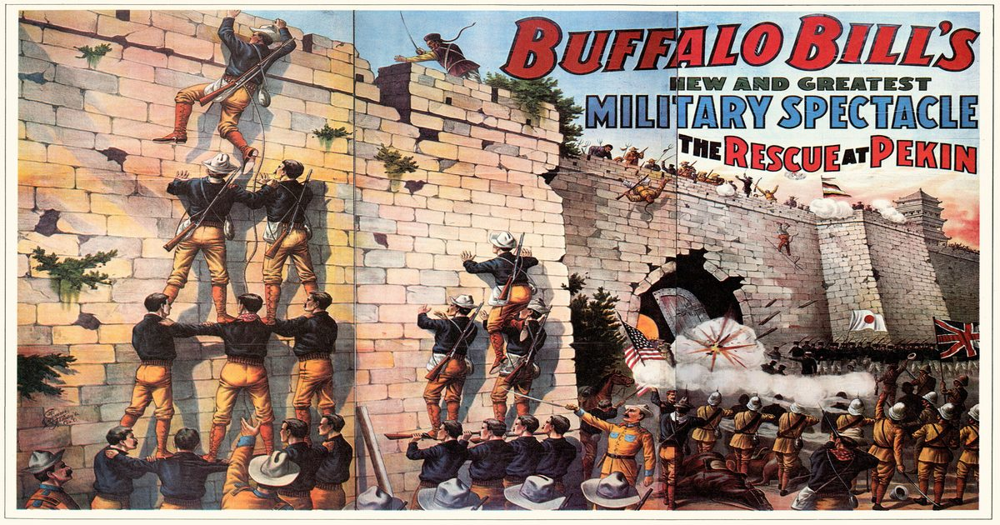

Поскольку Боксерское восстание украло заголовки со своего Дикого Запада, Баффало Билл включил столкновение в свое шоу
В 1901 году Коди заставил своих сиу-исполнителей надеть китайскую одежду и изобразить повстанцев.

В 1901 году Коди заставил своих сиу-исполнителей надеть китайскую одежду и изобразить повстанцев.